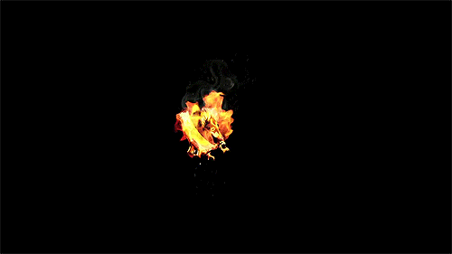

Los Juegos del Hambre - Suzanne Collins
1. Los Juegos del Hambre
Sipnosis
GANAR SIGNIFICA FAMA Y RIQUEZA. PERDER SIGNIFICA UNA MUERTE SEGURA. En una oscura versión del futuropróximo, doce chicos y doce chicas se ven obligados a participar en un reality show llamado Los juegos del hambre. Solo hay una regla: matar o morir. Cuando Katniss Everdeen, una joven de dieciséis años se presenta voluntaria para ocuparel lugar de su hermana en los juegos, lo entiende como una condena a muerte. Sin embargo Katniss ya ha visto la muertede cerca y la supervivencia forma parte de su naturaleza. ¡Que empiecen los septuagésimo cuartos juegos del hambre!
Reseña
Hace años, de una tierra destrozada llamada Norteamérica surgió Panem, una ciudad formada por trece distritos que rodean el Capitolio, centro neutral del país. Pero aunque el Capitolio llevó la paz y prosperidad, los trece distritos se rebelaron con él. Doce de ellos fueron vencidos, y el decimotercero aniquilado. El Capitolio, para recordar a los distritos supervivientes quién mandaba, creó los Juegos del Hambre, un cruel juego de supervivencia que se emite por televisión y que todo el mundo está obligado a ver. En él, veinticuatro adolescentes de entre doce y dieciocho, un chico y una chica por cada distrito, son elegidos al azar para participar en los juegos. El objetivo es sencillo: luchar a muerte entre ellos, pues solo uno de los veinticuatro puede ganar.
En este ambiente de opresión vive Katniss Everdeen, una chica de dieciséis años del distrito doce que caza fuera de los límites permitidos por el Capitolio para alimentar a su madre y a su hermana Prim, de doce años. Pero todo cambia cuando se celebra el sorteo de los Tributos y la pequeña Prim sale elegida. Katniss se ofrece sin dudarlo para ocupar su lugar, y pronto se encuentra en la Arena luchando contra veintitrés Tributos más.
Nacida de una mezcla con ingredientes de Battle Royale, 1984 y El Señor de las Moscas, la novela nos pone en la piel de Katniss, a través de quien vemos la difícil vida de los distritos, controlados día y noche por el Capitolio. De carácter fuerte y algo reservada, los principios de Katniss se ven puestos a prueba en los terribles Juegos del Hambre, todo un espectáculo para el Capitolio y una humillación para los distritos. Sin duda lo que más sorprende en este libro es la sangre fría de los Tributos en la Arena, que deben hacer de todo para conseguir sobrevivir. Aun así Katniss encontrará en los Juegos la amistad y el compañerismo que la ayudarán a sobrevivir un día más.
La historia de Los Juegos del Hambre, según la propia autora, estaba planeada como un libro único, pero al terminar de escribirlo supo que necesitaba una secuela, la cual está prevista que salga este mismo septiembre en Estados Unidos con el nombre de Catching Fire. Así que poneos cómodos y encended la televisión. ¡Los Juegos del Hambre han empezado!
